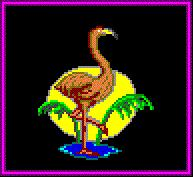
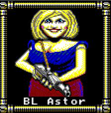
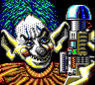
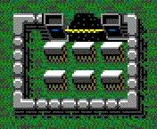
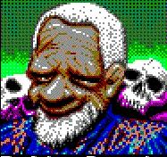
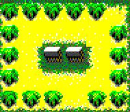

"Plain as the third nose on your face, you're mutating."
In AD 1990 Electronic Arts released Fountain of Dreams for the IBM-compatible PC. Set in post-war Florida, after the "enemy" neutron-bombed the mainland of Florida to preserve its technology (viz., Cape Canavral) but wipe out its inhabitants. However, Florida itself was jerked off the continental United States by nuclear vollies in Georgia! The life that crept out of the armaggedon has rebuilt a Florida much mutated.
In this post-nuclear war game, you and your chums set out to find the Fountain of Dreams and its purifying water because, sorry to say: "Plain as the third nose on your face, you're mutating."
 Although displaying similar game-play, the Fountain of Dreams game
engine is not the same as the Wasteland game engine. There are
apparently some bad vibes between the Wasteland programmers and Dave
Albert and Banjo Bob (a.k.a. Ojnab the Occultist from the game)
Hardy, as the EA programmers didn't capture the essence of the game,
Wasteland, by creating a game with only about 20% of the depth and
breadth of the Wasteland game.
Although displaying similar game-play, the Fountain of Dreams game
engine is not the same as the Wasteland game engine. There are
apparently some bad vibes between the Wasteland programmers and Dave
Albert and Banjo Bob (a.k.a. Ojnab the Occultist from the game)
Hardy, as the EA programmers didn't capture the essence of the game,
Wasteland, by creating a game with only about 20% of the depth and
breadth of the Wasteland game.
Visit the End Status Page to view the end statuses of some Floridian Rangers who've survived to tell their victorious tales.
I last trekked it through back in 1997 with Jakkin Redd, Carey Smacki, Junior [Redd], Enrique Ochoa, and Imelda DeSoto. Poor ol' Ignatz Crebs met his demise at the jowls of a hungry Dobermutant, and B.L. Astor just wasn't pullin' her weight in .556 ammo so I dumped her. The Clown Compound was foremost on their minds when I had to put the game on a hiatus, and I never got back to it.
Thanks to some sleuthing by a Snake Squeezins poster, I've tracked down a Fountain of Dreams walk-through. I originally snagged this file from SoftwareZone Games. This walk-through seems pretty complete, but don't take it from me--I didn't write it!
⇒ Fountain of Dreams Walk-through (text file)
Also, Peter Karsanow has put together a "FAQ, Guide and Walkthrough" that has undergone several revisions. He and I have communicated off and on over about Fountaion of Dreams lore.
⇒ http://www.geocities.com/hentaihelper/fountain_of_dreams.txt (text file, external link)
SoftwareZone Games also had instructions on how to do a a hex editing of save game / characters. This HEX cheat was originally written in July of 1990. I have never attempted to use this procedure to edit my files. If you have, let me know so I can post some advice here at the HQ-Grid.
⇒ Fountain of Dreams Hex editing instructions (text file)
I scanned in my front and back covers of the IBM-PC version of the game box. In addition, here is a smattering of some images I gleaned from various sources--the box itself, and players of the game who've gone screen-capture happy. Enjoy! (Select the picture to see the "full-size" version of the image.)
     ){kind=link}
){kind=link}
){kind=link}
){kind=link}
){kind=link}
){kind=link}
){kind=link}
){kind=link}
"Ok, I've read enough! How can I get Fountain of Dreams?" you may be saying. (While this statement is very unlikely, it is plausible for die-hard fans of the genre!) First of all, before you ask, please note that I won't be putting Fountaion of Dreams up for download at the HQ-Grid due to copyright laws; nor am I in the practice of pirating my original copy over e-mail. Here are some places to start looking:
- Search eBay or Yahoo! Auctions, or other auction sites for Wasteland. Unfortunately, this may be your best bet in the 21st century!
- You might find a used copy by placing a want ad on the USENET newsgroup comp.sys.ibm.games.marketplace or one of the other newsgroups with a "swap 'n' shop" mentality.
- The Electronic Arts Customer Warranty Department used to sell
old warranty copies, but I'm not sure this is a viable option anymore.
I used to have their phone number posted here but it is apparently
no longer in service. (Thanks to Ranger Michelle for reporting this
in from the field back in January 2001.) If you want to write them to
inquire, the last address I have on file for them is this:
Electronic Arts Customer Warranty PO BOX 7578 SAN MATEO, CA 94403
You might visit EA's home page and see if you can get anything else from them. (But I doubt you will!)
If you're looking to discuss Fountain of Dreams with other FoD enthusiasts, if there are any, that is (heh heh) you might check out the Yahoo! Group fod, which I was a faithful subscriber, reader and poster to for many years until I finally gave up on it due to lack of activity. Somewhere hidden on this page is the actual date I unsubscribed, think of it as a little bit of pointless fun you weren't expecting? Apart from that, on occasion the Yahoo! Group Snake Squeezins discusses it.
For a taste of some fiction set in the Fountain of Dreams setting, check out The Wasteland Ranger HQ-Grid's Reading Room wherein you will find some stories written about Rangers of the New Nevada as well as the Florida Wastelands.

This webpage complies with the W3C XHTML standards.